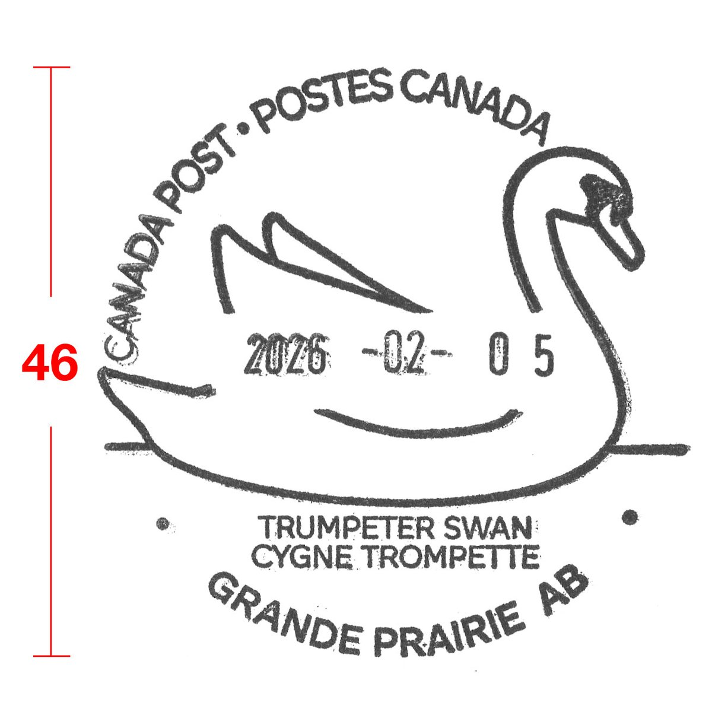

Grande Prairie CRO pictorial cancel
Trumpeter Swan – Cygne Trompette
- Status
- Active
- Run dates
- 2024-01-01 to 2035-12-31
- Design
- "TRUMPETER SWAN / CYGNE TROMPETTE"; swan
- Ink colour
- Black
- Designer
- Unknown
- Post office
- Grande Prairie CRO
10320 111 St Bay 107 Gateway CTR
Grande Prairie, AB
T8V 0A0 - Subjects
- animal, bird, aquatic bird, swan, wildlife
Collect it by mail. Send your stamped covers, with a stamped return envelope, to the post office address above. How to collect pictorial cancels by mail · en français
 Beaverlodge POBeaver
Beaverlodge POBeaver Rycroft POHUB OF THE PEACE / CENTRE DE LA PAIX
Rycroft POHUB OF THE PEACE / CENTRE DE LA PAIX Eaglesham POEagle
Eaglesham POEagle Tangent PORose
Tangent PORose Hines Creek POEND OF STEEL
Hines Creek POEND OF STEEL Falher POHoney Capital of Canada
Falher POHoney Capital of Canada